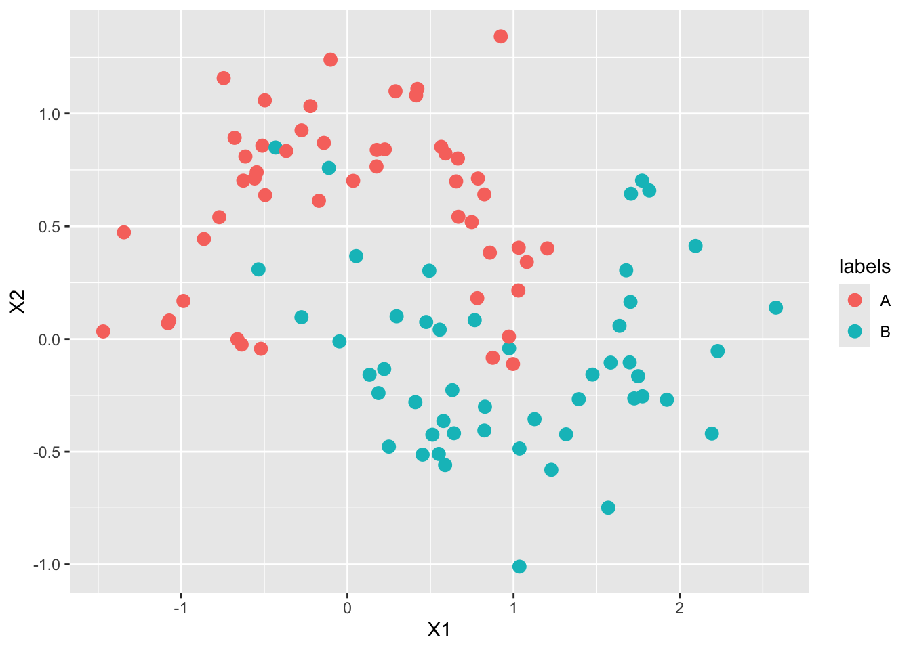
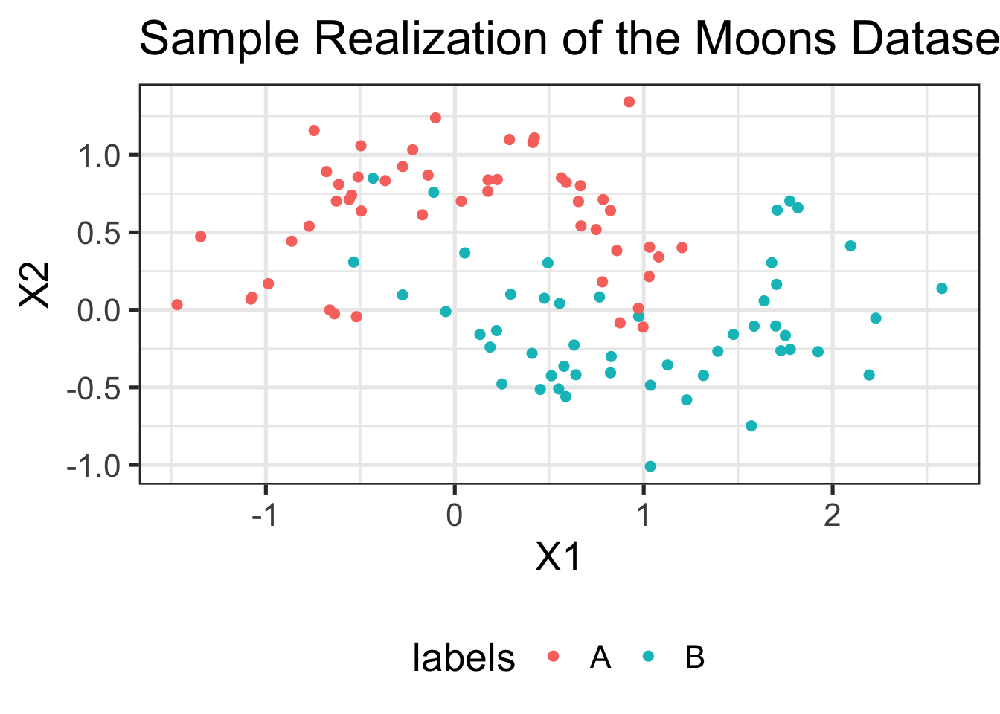
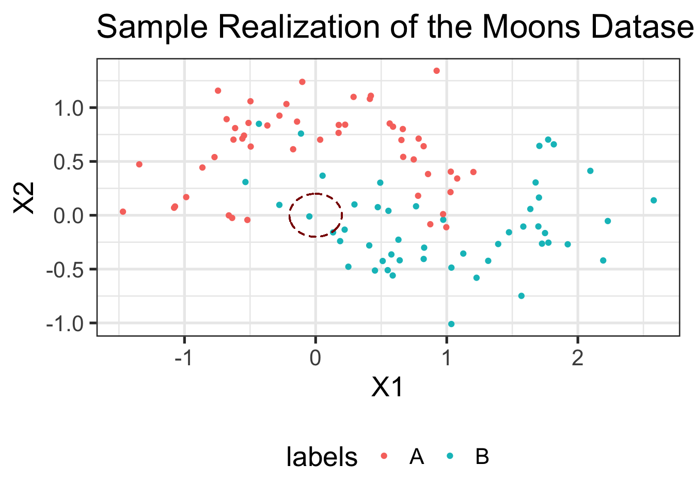
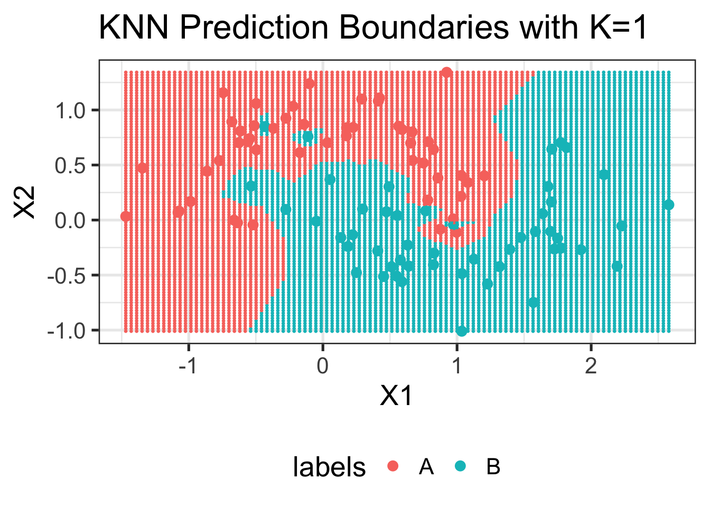
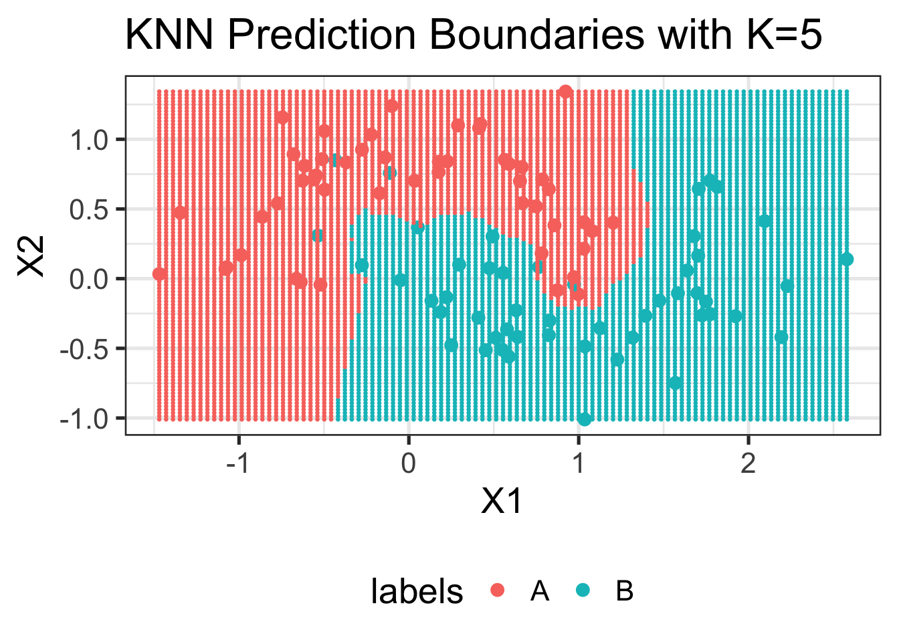
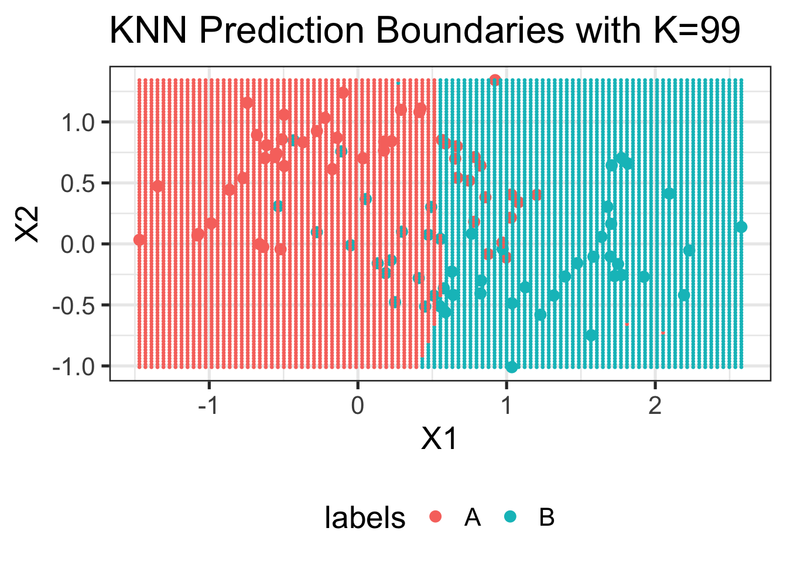
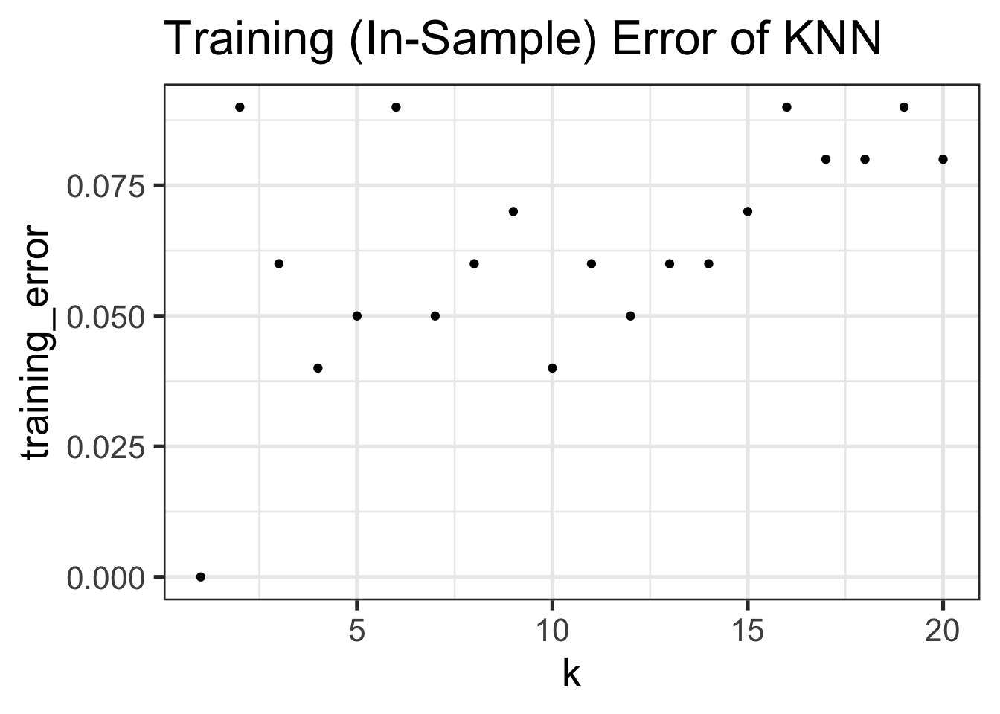
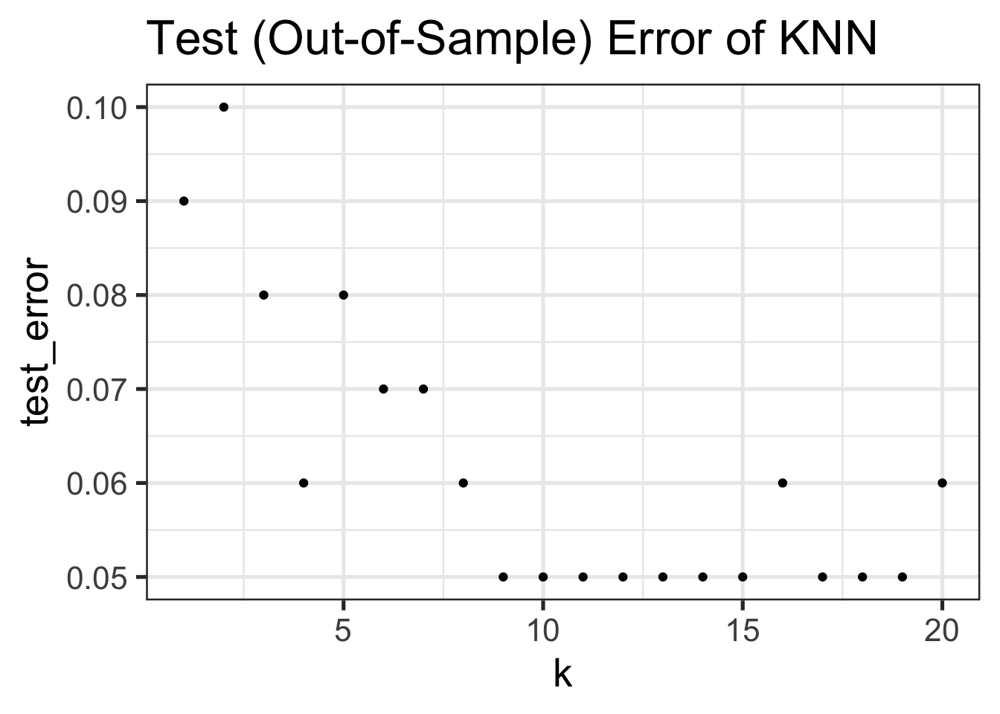
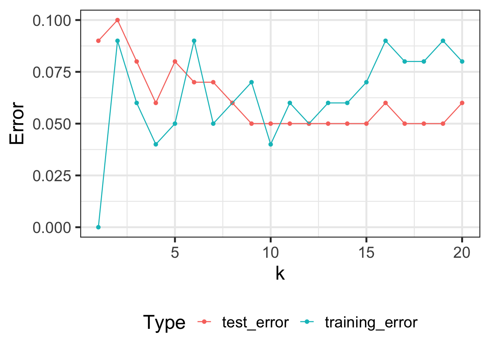
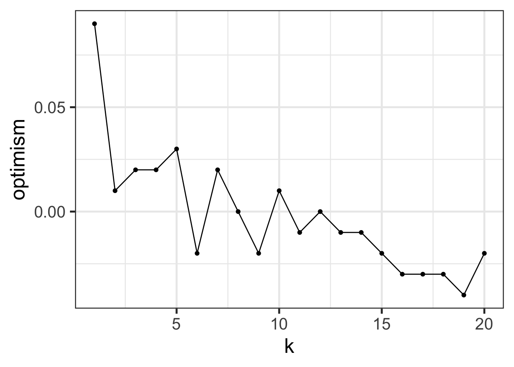

library(class) # Provides a KNN function for classification
args(knn)function (train, test, cl, k = 1, l = 0, prob = FALSE, use.all = TRUE)
NULLWhere classical statistics focuses on learning information about a population from a (representative) sample, Machine Learning focuses on out-of-sample prediction accuracy.
For example, given a large set of medical records, the natural instinct of a statistician is to find the indicators of cancer in order assess them via some sort of follow-on genetic study, while a ML practitioner will typically start by building a predictive algorithm to predict who will be diagnosed with cancer. The statistician will perform calculations with \(p\)-values, test statistics, and the like to make sure that any discovered relationship is accurate, while the ML practitioner will verify the performance by finding a new (hopefully similar) set of medical records to test algorithm performance.
Clearly, this difference is more one of style than substance: the statistician might see what features are important in the ML model to decide what to investigate, while the ML modeler will use statistical tools to make sure the model is finding something real and not just fitting to noise. In this course, the distinction may be even blurrier as our focus is statistical machine learning - that little niche right on the boundary between the two fields.
In brief, “statistics vs ML” is a bit of a meaningless distinction as both fields draw heavily from each other. I tend to say one is doing statistics whenever the end-goal is to better understand something about the real world (ie., the end product is knowledge), while one is doing ML whenever one is building a system to be used in an automated fashion (ie., the end product is software), but definitions vary.1
In this course we will use the following taxonomy borrowed from the ML literature:
Supervised Learning: Tasks with a well-defined target variable (output) that we aim to predict
Examples:
Unsupervised Learning: Given a whole set of variables, none of which is considered an output, learn useful underling structure.
Examples:
There are other types of learning tasks: e.g. semi-supervised, online, reinforcement, but the Supervised/Unsupervised distinction is the main one we will use in this course.
Within Supervised Learning, we can further subdivide into two major categories:
Regression Problems: problems where the response (label) is a real-valued number
Classification Problems: problems where the response (label) is a category label.
Linear Regression, which we will study more below, is the canonical example of a regression tool for supervised learning.
At this point, you can already foresee one of the (many) terminology inconsistencies will will encounter in this course: logistic regression is a tool for classification, not regression. As modern ML is the intersection of many distinct intellectual traditions, the terminology is rarely consistent.2
As we think about measuring a model’s predictive performance, it becomes increasingly important to distinguish between in-sample and out-of-sample performance, also called training (in-sample) and testing (out-of-sample) performance.
In previous courses, you likely have assessed model fit by seeing how well your model fits the data it was trained on: statistics like \(R^2\), SSE, SSR in regression or \(F\)-tests for model comparison do just this. As you have used them, they are primarily useful for comparison of similar models, e.g., OLS with different numbers of predictor variables. But it’s worth reflecting on this process a bit more: didn’t the model with more predictors always fit the data better? If so, why don’t we always just include all of our predictors?
Of course you know, the answer is that we want to avoid overfitting. Just because a model fit the data a bit better doesn’t mean it is actually better. If you need 1,000 variables to get a 0.1% reduction in MSE, do you really believe those features are doing much? No!
You likely have a sense that a feature needs to “earn its keep” to be worth including in a model. Statisticians have formalized this idea very well in some contexts: quantities like degrees of freedom or adjusted \(R^2\) attemps to measure whether a variable provides a statistically significant improvement in performance. These calculations typically rely on subtle calculations involving nice properties of the multivariate normal distribution and ordinary least squares, or things that can be (asymptotically) considered essentially equivalent.
In this class, we don’t want to make those sorts of strong distributional and modeling assumptions. So what can we do instead? Well, if we want to see if Model A predicts more accurately than Model B on new data, why don’t we just do that? Let’s get some new data and compare the MSEs of Model A and Model B: whichever one does better is the one that does better.3
This is a pretty obvious idea, so it’s worth asking why it’s not the baseline and why statisticians bothered with all the degrees of freedom business to start with. As always, you have to know your history: statistics comes from a lineage of scientific experimentation where data is limited and often quite expensive to get. If you are running a medical trial, you can’t just toss a few hundred extra participants in - this costs money! If you are doing an agricultural experiment, it may take several years to see whether a new seed type actually has higher yield than the previous version. It’s also not clear how one should separate data into training and test sets: if you are studying, e.g., friendship dynamics on Facebook, you don’t have an (obvious) “second Facebook” that you can use to assess model accuracy.
By contrast, CS-tradition Machine Learning comes from a world of “internet-scale” where data is plentiful, cheap, and is continuously being collected.4 Not all problems fall in this regime but, as we will see, enough do that it’s worth thinking about what we should do in this scenario. Excitingly, if we don’t demand a full and exhaustive mathematical characterization of a method before we actually apply it, we can begin to explore much more complex and interesting models.
A good rule of thumb for applied statistical and data science work: begin by asking yourself what you would do if you had access to the whole population (or an infinitely large sample) and then adapt that answer to the limited data you actually have. You always want to make sure you are asking the right question, even if you are only able to give an approximate finite-data answer, rather than giving an ‘optimal’ answer to a question you don’t actually care about.
So, for the first two units of this course, we will put this idea front and center: we will fit our models to a training set and then see how well they perform on a test set. Our goal is to not to find find models which perform well on the test set per se: we really want to find models that perform well on the all future data, not just one test set. But this training/test split will certainly get us going in the right direction.
Looking ahead, let’s note some of the key questions we will come back to again and again:
So far, we have two useful concepts:
with a third we can set up a trivial, but surprisingly useful, inequality:
\[\text{Test Error} = \text{Training Error} + \text{Generalization Gap}\]
Here, the “Generalization Gap” is defined as the difference between the training error and the test error.5 Essentially, the Generalization Gap measures the “optimism” bias obtained by measuring accuracy on the original training data. If the Generalization Gap is large, the model will look much better on the training data then when we actually go to put it into practice. Conversely, if the Generalization Gap is small, the performance we estimate from the training data will continue when we deploy our model.
This is a all a bit circular, but it lets us break our overarching goal (small test error) into two parts:
We can only be confident that we’ll have a small test error when these both of these are true. Again - and just to be clear - having a small training error is important, but it is only necessary and not sufficient to have a small test error.
We can simply observe training error, so much of our theoretical analysis focuses on understanding the generalization gap. For now, let’s think about the generalization gap of plain linear regression (OLS). It is not hard to show (and we might show in class next week) that, if the OLS model is true, the expected training MSE is:
\[\mathbb{E}[\text{Training MSE}] = \mathbb{E}\left[\frac{1}{n}\sum_{i=1}^n(y_i - \sum_{j=1}^p x_{ij}\hat{\beta}_j)^2\right] = \frac{\sigma^2(n-p)}{n} = \sigma^2\left(1-\frac{p}{n}\right)\]
Here \(\sigma^2\) is the ‘noise variance’ of the OLS model. (We will review the OLS model in much more detail next week.)
This is somewhat remarkable: if we knew the exact true model \(\beta_*\), our MSE would be \(\sigma^2\), but our training MSE is less than that. How can we do better than the optimal and exactly correct model? Overfitting - our OLS fits our training data a bit ‘too well’ and it manages to capture the true signal and the noise. Whatever noise is in the data doesn’t carry into the test set, so we get a bit of overfitting.
Even a simple model like OLS is vulnerable to a bit of overfitting. It isn’t too big in this context and our formula above actually lets us see how it behaves:
The \(n\to\infty\) behavior shouldn’t surprise you: the theme of “more data yields better estimation and smaller error” is ubiquitous in statistics. The behavior as \(p\) increases may not be something you have seen before. Later in this course, we will actually ask what happens if \(p > n\). Clearly, our formula from above can’t hold as it predicts negative MSE! But we’ll get to that later…
As \(p\) gets larger, OLS is more prone to overfitting. It turns out that this is not a special property of OLS - basically all methods will have this property to one degree or another. While there are many ways to justify this, perhaps the simplest is a story about “complexity”: with more features, and hence more coefficients, OLS becomes a more complex model and more able to fit both the signal and the noise in the training data. Clearly, complexity is not necessarily bad - we want to be able to capture all of the signal in our data - but it is dangerous.
This complexity story is one we will follow through the rest of this course. A more complex model is one which is able to fit its training data easily. Mathematically, we actually measure complexity by seeing how well a model fits pure noise: if it doesn’t fit it well at all (because there is no signal!), we can usually assume it won’t overfit on signal + noise. But if it fits pure noise perfectly, it has by definition overfit the training data.
I like to think of complexity as “superstitious” or “gullibility”: the model will believe (fit to) anything we tell it (training data), whether it is true (signal) or not (noise).
We don’t want a model that is too complex, but we also don’t want a model that is too simple. If it can’t fit signal, it is essentially useless. In our metaphor, an overly simple (low complexity) model is like a person who simply doesn’t believe anything at all: they are never tricked, but they also can’t really understand the world.
Let us now take a quick detour into a flexible family of models and see how performance relates to the complexity story.
Let’s now see how complexity plays out for a very simple classifier, \(K\)-Nearest Neighbors (KNN). KNN formalizes the intuition of “similar inputs -> similar outputs.” KNN looks at the \(K\) most similar points in its training data (“nearest neighbors” if you were to plot the data) and takes the average label to make its prediction.6
library(class) # Provides a KNN function for classification
args(knn)function (train, test, cl, k = 1, l = 0, prob = FALSE, use.all = TRUE)
NULLYou can see here that KNN requires access to the full training set at prediction time: this is different than something like OLS where we reduce our data to a set of regression coefficients (parameters).7
We’ll also need some data to play with. For now, we’ll use synthetic data:
#' Make two interleaving half-circles
#'
#' @param n_samples Number of points (will be divided equally among the circles)
#' @param shuffle Whether to randomize the sequence
#' @param noise Standard deviation of Gaussian noise applied to point positions
#'
#' @description Imitation of the Python \code{sklearn.datasets.make_moons} function.
#' @return a \code{list} containining \code{samples}, a matrix of points, and \code{labels}, which identifies the circle from which each point came.
#' @export
make_moons <- function(n_samples=100, shuffle=TRUE, noise=0.25) {
n_samples_out = trunc(n_samples / 2)
n_samples_in = n_samples - n_samples_out
points <- matrix( c(
cos(seq(from=0, to=pi, length.out=n_samples_out)), # Outer circle x
1 - cos(seq(from=0, to=pi, length.out=n_samples_in)), # Inner circle x
sin(seq(from=0, to=pi, length.out=n_samples_out)), # Outer circle y
1 - sin(seq(from=0, to=pi, length.out=n_samples_in)) - 0.5 # Inner circle y
), ncol=2)
if (!is.na(noise)) points <- points + rnorm(length(points), sd=noise)
labels <- c(rep(1, n_samples_out), rep(2, n_samples_in))
if (!shuffle) {
list(
samples=points,
labels=labels
)
} else {
order <- sample(x = n_samples, size = n_samples, replace = F)
list(
samples=points[order,],
labels=as.factor(ifelse(labels[order] == 1, "A", "B"))
)
}
}This function comes from the clusteringdatasets R package, but the underlying idea comes from a function in sklearn, a popular Python ML library.
Let’s take a look at this sort of data:
TRAINING_DATA <- make_moons()library(ggplot2)
library(tidyverse)
data.frame(TRAINING_DATA$samples,
labels=TRAINING_DATA$labels) |>
ggplot(aes(x=X1, y=X2, color=labels)) +
geom_point(size=3)
We can make this a bit more attractive:
MY_THEME <- theme_bw(base_size=20) + theme(legend.position="bottom")
theme_set(MY_THEME)data.frame(TRAINING_DATA$samples, labels=TRAINING_DATA$labels) %>%
ggplot(aes(x=X1, y=X2, color=labels)) +
geom_point(size=2) +
ggtitle("Sample Realization of the Moons Dataset")
Much better!
Let’s try making a simple prediction at the point (0, 0):
knn(TRAINING_DATA$samples,
cl=TRAINING_DATA$labels,
test=data.frame(X1=0, X2=0), k=3)[1] B
Levels: A BDoes this match what you expect from the plot above? Why or why not? The following image might help:
library(ggforce)
data.frame(TRAINING_DATA$samples, labels=TRAINING_DATA$labels) %>%
ggplot(aes(x=X1, y=X2, color=labels)) +
geom_point() +
ggtitle("Sample Realization of the Moons Dataset") +
geom_circle(aes(x0=0, y0=0, r=0.2), linetype=2, color="red4")
Why is R returning a factor response here? What does that tell us about the type of ML we are doing?
We can also visualize the output of KNN at every point in space:
visualize_knn_boundaries <- function(training_data, k=NULL){
xrng <- c(min(training_data$samples[,1]), max(training_data$samples[,1]))
yrng <- c(min(training_data$samples[,2]), max(training_data$samples[,2]))
xtest <- seq(xrng[1], xrng[2], length.out=101)
ytest <- seq(yrng[1], yrng[2], length.out=101)
test_grid <- expand.grid(xtest, ytest)
colnames(test_grid) <- c("X1", "X2")
pred_labels = knn(training_data$samples,
cl=training_data$labels,
test_grid,
k=k)
ggplot() +
geom_point(data=data.frame(TRAINING_DATA$samples,
labels=TRAINING_DATA$labels),
aes(x=X1, y=X2, color=labels),
size=3) +
geom_point(data=data.frame(test_grid, pred_labels=pred_labels),
aes(x=X1, y=X2, color=pred_labels),
size=0.5) +
ggtitle(paste0("KNN Prediction Boundaries with K=", k))
}
visualize_knn_boundaries(TRAINING_DATA, k=1)
If we raise \(K\), we get smoother boundaries:
visualize_knn_boundaries(TRAINING_DATA, k=5)
And if we go all the way to \(K\) near to the size of the training data, we get very boring boundaries indeed:
visualize_knn_boundaries(TRAINING_DATA, k=NROW(TRAINING_DATA$samples)-1)
What does this tell us about the complexity of KNN as a function of \(K\)?
In the terminology we introduced above, we see that increasing \(K\) decreases model complexity (wiggliness).
Let’s now see how training error differs as we change \(K\):
TEST_DATA <- make_moons()
TRAINING_ERRORS <- data.frame()
for(k in seq(1, 20)){
pred_labels_train <- knn(TRAINING_DATA$samples, cl=TRAINING_DATA$labels, TRAINING_DATA$samples, k=k)
true_labels_train <- TRAINING_DATA$labels
err <- mean(pred_labels_train != true_labels_train)
cat(paste0("At k = ", k, ", the training (in-sample) error of KNN is ", round(100 * err, 2), "%\n"))
TRAINING_ERRORS <- rbind(TRAINING_ERRORS, data.frame(k=k, training_error=err))
}At k = 1, the training (in-sample) error of KNN is 0%
At k = 2, the training (in-sample) error of KNN is 9%
At k = 3, the training (in-sample) error of KNN is 6%
At k = 4, the training (in-sample) error of KNN is 4%
At k = 5, the training (in-sample) error of KNN is 5%
At k = 6, the training (in-sample) error of KNN is 9%
At k = 7, the training (in-sample) error of KNN is 5%
At k = 8, the training (in-sample) error of KNN is 6%
At k = 9, the training (in-sample) error of KNN is 7%
At k = 10, the training (in-sample) error of KNN is 4%
At k = 11, the training (in-sample) error of KNN is 6%
At k = 12, the training (in-sample) error of KNN is 5%
At k = 13, the training (in-sample) error of KNN is 6%
At k = 14, the training (in-sample) error of KNN is 6%
At k = 15, the training (in-sample) error of KNN is 7%
At k = 16, the training (in-sample) error of KNN is 9%
At k = 17, the training (in-sample) error of KNN is 8%
At k = 18, the training (in-sample) error of KNN is 8%
At k = 19, the training (in-sample) error of KNN is 9%
At k = 20, the training (in-sample) error of KNN is 8%ggplot(TRAINING_ERRORS, aes(x=k, y=training_error)) +
geom_point() +
ggtitle("Training (In-Sample) Error of KNN")
Compare this to the test error:
TESTING_ERRORS <- data.frame()
for(k in seq(1, 20)){
pred_labels_train <- knn(TRAINING_DATA$samples, cl=TRAINING_DATA$labels, TEST_DATA$samples, k=k)
true_labels_train <- TEST_DATA$labels
err <- mean(pred_labels_train != true_labels_train)
cat(paste0("At k = ", k, ", the test (out-of-sample) error of KNN is ", round(100 * err, 2), "%\n"))
TESTING_ERRORS <- rbind(TESTING_ERRORS, data.frame(k=k, test_error=err))
}At k = 1, the test (out-of-sample) error of KNN is 9%
At k = 2, the test (out-of-sample) error of KNN is 10%
At k = 3, the test (out-of-sample) error of KNN is 8%
At k = 4, the test (out-of-sample) error of KNN is 6%
At k = 5, the test (out-of-sample) error of KNN is 8%
At k = 6, the test (out-of-sample) error of KNN is 7%
At k = 7, the test (out-of-sample) error of KNN is 7%
At k = 8, the test (out-of-sample) error of KNN is 6%
At k = 9, the test (out-of-sample) error of KNN is 5%
At k = 10, the test (out-of-sample) error of KNN is 5%
At k = 11, the test (out-of-sample) error of KNN is 5%
At k = 12, the test (out-of-sample) error of KNN is 5%
At k = 13, the test (out-of-sample) error of KNN is 5%
At k = 14, the test (out-of-sample) error of KNN is 5%
At k = 15, the test (out-of-sample) error of KNN is 5%
At k = 16, the test (out-of-sample) error of KNN is 6%
At k = 17, the test (out-of-sample) error of KNN is 5%
At k = 18, the test (out-of-sample) error of KNN is 5%
At k = 19, the test (out-of-sample) error of KNN is 5%
At k = 20, the test (out-of-sample) error of KNN is 6%ggplot(TESTING_ERRORS, aes(x=k, y=test_error)) +
geom_point() +
ggtitle("Test (Out-of-Sample) Error of KNN")
The difference between the two is clearer if we put them on the same figure:
ERRS <- inner_join(TRAINING_ERRORS, TESTING_ERRORS, by="k") |>
pivot_longer(-k) |>
rename(Error=value, Type=name)
ggplot(ERRS, aes(x=k, y=Error, color=Type)) +
geom_point() + geom_line()
We notice a few things here:
We can also look at the gap between training and test error: this is called generalization error or optimism:
inner_join(TRAINING_ERRORS, TESTING_ERRORS, by="k") |>
mutate(optimism=test_error - training_error) |>
ggplot(aes(x=k, y=optimism)) +
geom_point() +
geom_line()
Consider the following questions:
Let us understand this using the tools of complexity we discussed above.
In this case, we could see the complexity visually by looking at the decision boundaries (the lines separating predictions of class “A” from class “B”). This isn’t universally true9, but the intuition of “high complexity = more wiggles” is usually pretty good.
The classical story of ML and complexity is given by something like this:10

For now, you can interpret “risk” as “test error” and “empirical risk” as “training error”.
Recent research has suggested that the story is not quite so simple. Some methods exhibit a “single descent” curve

and some even have a “double descent” curve:

The story of these curves is still an active topic of research, but it’s pretty clear that very large and very deep neural networks exhibit something like a double descent curve. My own guess is that we’re not quite measuring ‘complexity’ correctly for these incredibly complex models and that the classical story holds if we go measure complexity in the right way, but this is far from a universally held belief.
So how do we measure complexity? For OLS, it seems to be proportional to \(p\), while for KNN it seems to be inverse to \(K\). In this class, we won’t really focus too much on the actual measurements. For most of the methods we study, it is usually pretty clear what drives complexity up or down, even if we can’t quite put a number on it.
It turns out there is a deep connection between generalization and a suitable notion of “stability”. A model is said to be relatively stable if changes to an input point do not change the output predictions significantly.11
At an intuitive level, this makes sense: if the model is super sensitive to individual inputs, it must be very flexible and hence quite complex. (A very simple model cannot be sensitive to all of its inputs.)
We can apply this idea to understand some rules-of-thumb and informal practices you might have seen in previous statistics courses:
Regression leverage: Leverage measures how much a single data point can change regression coefficients. This is stability!
Removing outliers: we often define outliers as observations which have a major (and assumed corrupting) influence on our inferences. By removing outliers, we guarantee that the resulting inference is not too sensitive to any of the remaining data points. Here, the ‘pre-step’ of outlier removal increases stability (by changing sensitivity of those observations to zero) and hopefully makes our inferences more accurate (better generalization)
Use of robust statistics, e.g. medians instead of means. These explicitly control the stability of our process.
Perhaps most importantly: this justifies why the large \(n\) (big sample) limit seems to avoid overfitting. If our model is fit to many distinct data points, it can’t be too sensitive to any of them. At least, that’s the hope…
The sort of statistical models you have seen to date – so-called parametric models – have a ‘stabilizing’ effect. By reducing lots of data to only a few parameters, those parameters (and hence the model output) can’t depend too much on any individual input point.12 This ‘bottleneck’ in the parameter space seems to improve performance.
Other methods, like \(1\)-Nearest-Neighbor, become increasingly more complex as we get more data and do not benefit from this sort of ‘bottleneck’ effect.
At this point, you might think that stability and variance are closely related concepts - you are not wrong and we will explore the connection in more detail next week.
There are some cultural differences that come from ML’s CS history vs Statistics’ “Science-Support” history: notably, ML folks think of (binary) classification while statisticians think of regression as the first task to teach.↩︎
You may recall the famous quip about the US and the UK: “Two countries, separated by a common language.”↩︎
You might still worry about the randomness of this comparison process: if we had a slightly different sample of our new data, would the better model still look better? You aren’t wrong to worry about this, but we have at a minimum made the problem much easier: now we are just comparing the means of two error distributions - classic \(t\)-test stuff - as opposed to comparing two (potentially complex) models.↩︎
Anecdotally, a Google Data Scientist once mentioned to me that they rarely bother doing \(p\)-value or significance calculations. At the scale of Google’s A/B testing on hundreds of billions of ad impressions, everything is statistically significant.↩︎
I’m being a bit sloppy here. This is more precisely the population test error, not the test set test error.↩︎
There are details here about how we measure similarity, but for now we will restrict our attention to simple Euclidean distance.↩︎
KNN is a non-parameteric method, but not all non-parametric methods require access to the training data at test time. We’ll cover some of those later in the course.↩︎
It is easier to understand this ‘in reverse’: as \(K \downarrow 1\), training error decreases to 0, so as \(K \uparrow n\), training error increases.↩︎
In OLS, the complexity doesn’t make the model ‘wigglier’ in a normal sense - it’s still linear after all - but you can think of it as the additional complexity of a 3D ‘map’ (i.e., a to-scale model) vs a standard 2D map.↩︎
Figures from HR Chapter 6, Generalization.↩︎
For details, see O. Bousquet and A. Elisseeff, Stability and Generalization in Journal of Machine Learning Research 2, pp.499-526.↩︎
Some regression textbooks advocate a rule that you have 30 data points for every variable in your model. This is essentially guaranteeing that the \(p/n\) ratio that controls the generalization of OLS (see above!) stays quite small.↩︎